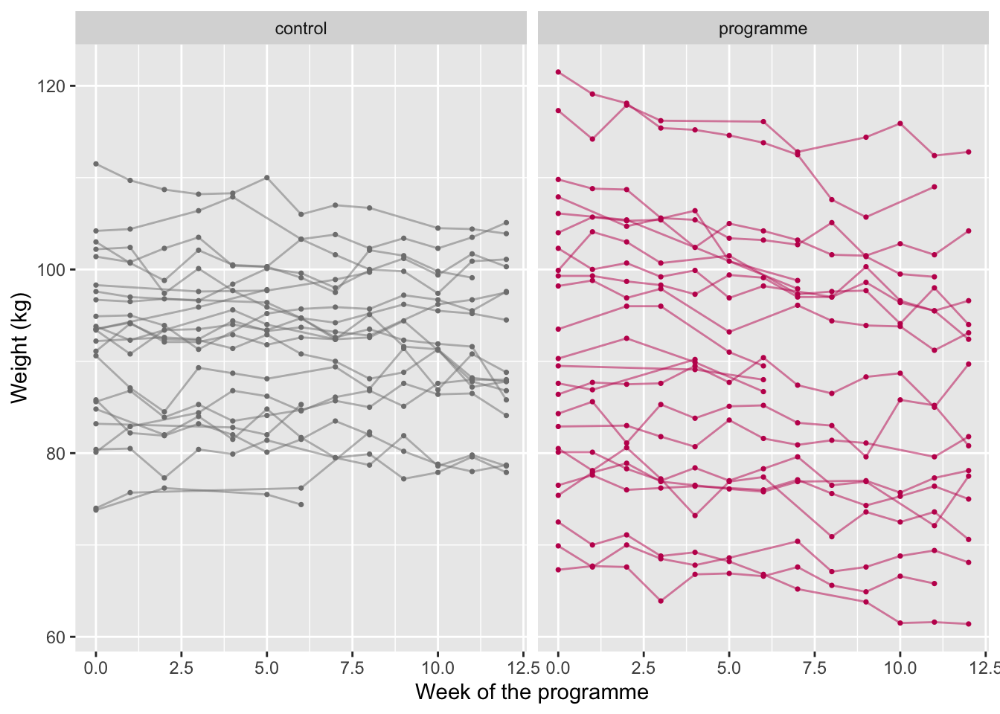
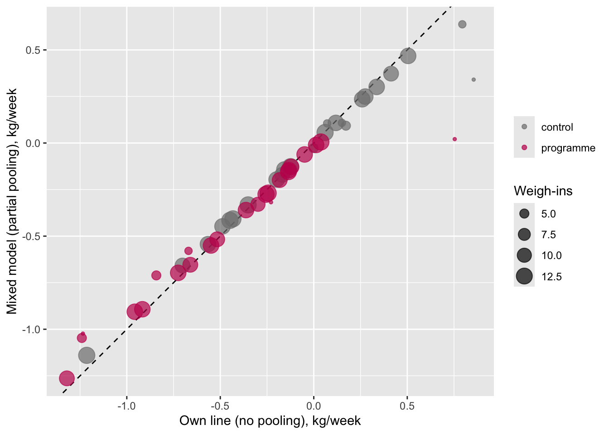

library(here)
here::i_am(".root-practicals")
library(renv)
renv::load(here::here())
renv::install(c("lme4", "lmerTest", "pbkrtest", "emmeans"))
renv::snapshot()Seminar 5 — Linear Mixed-Effects Models
PSY40760 Advanced Data Analysis and Statistics in R
Worksheet 5
Welcome
Session at a glance
| Date | Wednesday 18 November 2026 |
| Room | QUI-115 |
| Time | 170 min |
| Staff | Dr Ondrej Zika, Cameron McCabe |
| Theory | Non-independence; pre-post data and random intercepts; random slopes; complete, no and partial pooling; reading the output; why the random part decides the SE; model comparison (LRT, AIC, BIC); degrees of freedom; fixed vs random effects; post hocs and reporting |
| Practical | The same steps in R: a joint walkthrough on Trial A, then guided exercises on sleepstudy |
Before you arrive
1. Environment
Get this week’s files: download them, do not clone the repository. Inside your existing course folder psy40760-practicals-2026, create a folder called seminar-05-mixed-models (exact name). From GitHub, download seminar-05-worksheet.qmd and the folder seminar-05-worksheet_files (with all its files) into it, keeping the same structure:
psy40760-practicals-2026/
├── .root-practicals
├── renv.lock
├── ...
└── seminar-05-mixed-models/
├── seminar-05-worksheet.qmd
└── seminar-05-worksheet_files/Do not download or clone the whole repository again: that would overwrite your earlier worksheets and your renv set-up. (Only if you cloned the repository with git in the first week: run git pull instead.)
Then use the course folder as in previous weeks (here + renv, see the environment set-up guide). This week adds the mixed-model packages:
lme4 fits the models, lmerTest adds degrees of freedom and p-values, pbkrtest provides the Kenward–Roger degrees of freedom, and emmeans computes the rate in each group (post hoc comparisons).
2. Reading
| Theory | Baker (2022), Research Methods Using R, Ch. 7: Mixed-effects models |
| Brown, V. A. (2021). An introduction to linear mixed-effects modeling in R. AMPPS, 4(1). | |
| Bates, Mächler, Bolker & Walker (2015). Fitting linear mixed-effects models using lme4. Journal of Statistical Software, 67(1). | |
| Barr, Levy, Scheepers & Tily (2013). Random effects structure for confirmatory hypothesis testing: Keep it maximal. Journal of Memory and Language, 68(3). |
Part 1: Joint walkthrough
Each subsection follows a part of the theory block. Notation is the same as on the slides: β for fixed effects, u for each person’s deviation, e for the residual, and * for “multiplied by”.
1.0 Load the packages and the data
library(here)
here::i_am(".root-practicals")
library(renv)
renv::load(here::here())- The project is out-of-sync -- use `renv::status()` for details.library(dplyr)
library(ggplot2)
library(lme4)
library(lmerTest) # loads after lme4, so lmer() now also reports df and p-values
library(emmeans)
grp_cols <- c(control = "grey50", programme = "#C2185B")
trial <- read.csv(here::here("seminar-05-mixed-models", "seminar-05-worksheet_files", "trial_a.csv"))
weekly <- read.csv(here::here("seminar-05-mixed-models", "seminar-05-worksheet_files", "trial_a_weekly.csv"))
trial <- trial %>% mutate(group = factor(group, levels = c("control", "programme")))
weekly <- weekly %>% mutate(group = factor(group, levels = c("control", "programme")))A. Two rows per person: pre and post
1.1 From one row to two rows per person
trial is the Seminar 4 data: one row per person, with the starting weight and the weight lost over 12 weeks. Turn it into long format: one row per measurement, time = 0 before and 1 after the programme.
pre <- trial %>% transmute(id, group, time = 0, weight = baseline_kg)
post <- trial %>% transmute(id, group, time = 1, weight = baseline_kg - loss_kg)
prepost <- bind_rows(pre, post) %>% arrange(id, time)
head(prepost) id group time weight
1 P01 control 0 105.6
2 P01 control 1 104.2
3 P02 control 0 101.1
4 P02 control 1 98.9
5 P03 control 0 82.0
6 P03 control 1 87.6nrow(prepost)[1] 96The group means before and after:
prepost %>%
group_by(group, time) %>%
summarise(mean_weight = mean(weight), .groups = "drop")# A tibble: 4 x 3
group time mean_weight
<fct> <dbl> <dbl>
1 control 0 92.0
2 control 1 91.0
3 programme 0 92.0
4 programme 1 86.6Check: how much weight did each group lose on average? What is the difference between the two losses? This difference is time:group in weight ~ time * group.
1.2 Ignore who is who: lm() on 96 rows
m_pp_lm <- lm(weight ~ time * group, data = prepost)
summary(m_pp_lm)$coefficients Estimate Std. Error t value Pr(>|t|)
(Intercept) 91.99166667 2.396981 38.378141096 2.088455e-58
time -1.00416667 3.389843 -0.296228099 7.677235e-01
groupprogramme 0.01666667 3.389843 0.004916649 9.960877e-01
time:groupprogramme -4.36250000 4.793962 -0.909998952 3.652010e-01confint(m_pp_lm)["time:groupprogramme", ] 2.5 % 97.5 %
-13.883721 5.158721 Check: the estimate is right (−4.36 kg), but how wide is the 95% CI? Where did the differences in starting weight between people go?
1.3 Random intercepts: tell the model who is who
(1 | id) gives each person their own starting level, u0j. The model estimates one SD for these, not 48 separate numbers.
m_pp_ri <- lmer(weight ~ time * group + (1 | id), data = prepost)
summary(m_pp_ri)$coefficients Estimate Std. Error df t value Pr(>|t|)
(Intercept) 91.99166667 2.396981 50.3516 38.378141041 5.979263e-39
time -1.00416667 1.019894 46.0000 -0.984579431 3.299812e-01
groupprogramme 0.01666667 3.389843 50.3516 0.004916649 9.960965e-01
time:groupprogramme -4.36250000 1.442348 46.0000 -3.024582254 4.064669e-03VarCorr(m_pp_ri) Groups Name Std.Dev.
id (Intercept) 11.199
Residual 3.533 Compare it with a t-test on each person’s change score (Seminar 2):
change <- trial %>% mutate(change = -loss_kg)
t.test(change ~ group, data = change, var.equal = TRUE)
Two Sample t-test
data: change by group
t = 3.0246, df = 46, p-value = 0.004065
alternative hypothesis: true difference in means between group control and group programme is not equal to 0
95 percent confidence interval:
1.459204 7.265796
sample estimates:
mean in group control mean in group programme
-1.004167 -5.366667 Check: compare the t and df of time:groupprogramme with the t-test. What does (1 | id) do that lm() did not?
B. Weekly weigh-ins
1.4 The data: one row per weigh-in
weekly %>% filter(id == "P01") id group sex age week weight_kg
1 P01 control female 43 0 104.2
2 P01 control female 43 1 104.4
3 P01 control female 43 3 106.4
4 P01 control female 43 4 107.9
5 P01 control female 43 6 103.3
6 P01 control female 43 7 103.8
7 P01 control female 43 8 102.3
8 P01 control female 43 9 103.4
9 P01 control female 43 10 102.3
10 P01 control female 43 11 103.5
11 P01 control female 43 12 105.1weekly %>%
count(id, group) %>%
summarise(people = n(), rows = sum(n), fewest = min(n), most = max(n)) people rows fewest most
1 48 481 3 13Plot every person’s trajectory (a “spaghetti plot”):
ggplot(weekly, aes(x = week, y = weight_kg, group = id, colour = group)) +
geom_line(alpha = 0.5) +
geom_point(size = 0.6) +
facet_wrap(~ group) +
scale_colour_manual(values = grp_cols) +
labs(x = "Week of the programme", y = "Weight (kg)") +
theme(legend.position = "none")
Fit a separate line for each person. reframe() runs lm() within each person:
per_person <- weekly %>%
group_by(id, group) %>%
reframe(start = coef(lm(weight_kg ~ week))[1],
rate = coef(lm(weight_kg ~ week))[2],
n = n())
range(per_person$start) # starting weights[1] 67.10897 120.58632range(per_person$rate) # kg per week[1] -1.3205263 0.8552632Check: how many rows and how many people? Do people differ more in where they start or in how fast they change?
1.5 Three ways to handle people
Way 1, complete pooling: lm() on all 481 rows.
m_lm <- lm(weight_kg ~ week * group, data = weekly)
summary(m_lm)$coefficients Estimate Std. Error t value Pr(>|t|)
(Intercept) 92.45253085 1.4096403 65.5859035 7.953257e-241
week -0.06771114 0.2036293 -0.3325216 7.396415e-01
groupprogramme -0.95904411 1.9772111 -0.4850489 6.278643e-01
week:groupprogramme -0.45008898 0.2891054 -1.5568337 1.201732e-01Way 2, no pooling: one rate per person (from 1.4), then a t-test on the rates. Every person counts equally, whether they came 3 times or 13.
t.test(rate ~ group, data = per_person, var.equal = TRUE)
Two Sample t-test
data: rate by group
t = 2.9996, df = 46, p-value = 0.004353
alternative hypothesis: true difference in means between group control and group programme is not equal to 0
95 percent confidence interval:
0.1370307 0.6961044
sample estimates:
mean in group control mean in group programme
-0.03504766 -0.45161521 Way 3, partial pooling: the mixed model. Each person gets their own start and rate, and the people come from one common distribution.
m_int <- lmer(weight_kg ~ week * group + (1 | id), data = weekly)
m_slope <- lmer(weight_kg ~ week * group + (1 + week | id), data = weekly)Shrinkage. coef() gives each person’s intercept and slope from the mixed model. For programme participants we add the interaction, β3, to get their own rate:
pp <- coef(m_slope)$id
pp$id <- rownames(pp)
shrink <- per_person %>%
left_join(pp %>% select(id, week_mixed = week), by = "id") %>%
mutate(rate_mixed = ifelse(group == "programme",
week_mixed + fixef(m_slope)["week:groupprogramme"],
week_mixed))
shrink %>% arrange(n) %>% select(id, group, n, rate, rate_mixed) %>% head(6)# A tibble: 6 x 5
id group n rate rate_mixed
<chr> <fct> <int> <dbl> <dbl>
1 P24 control 3 0.855 0.340
2 P25 programme 3 -1.23 -1.02
3 P37 programme 3 -0.229 -0.318
4 P48 programme 3 0.754 0.0209
5 P10 control 4 0.151 0.108
6 P17 control 4 0.0714 0.105 ggplot(shrink, aes(x = rate, y = rate_mixed, size = n, colour = group)) +
geom_abline(linetype = 2) +
geom_point(alpha = 0.7) +
scale_colour_manual(values = grp_cols) +
labs(x = "Own line (no pooling), kg/week", y = "Mixed model (partial pooling), kg/week",
size = "Weigh-ins", colour = NULL)
Check: which people move furthest from the dashed line, and why?
1.6 Reading summary(lmer())
summary(m_slope)Linear mixed model fit by REML. t-tests use Satterthwaite's method [
lmerModLmerTest]
Formula: weight_kg ~ week * group + (1 + week | id)
Data: weekly
REML criterion at convergence: 2124.1
Scaled residuals:
Min 1Q Median 3Q Max
-2.83613 -0.55286 0.01708 0.56485 2.63431
Random effects:
Groups Name Variance Std.Dev. Corr
id (Intercept) 156.1670 12.4967
week 0.1749 0.4182 -0.48
Residual 2.0733 1.4399
Number of obs: 481, groups: id, 48
Fixed effects:
Estimate Std. Error df t value Pr(>|t|)
(Intercept) 91.82721 2.55740 46.04624 35.907 < 2e-16 ***
week -0.06381 0.09125 42.99053 -0.699 0.48816
groupprogramme 0.24158 3.61656 46.03874 0.067 0.94703
week:groupprogramme -0.39715 0.12964 43.42095 -3.063 0.00375 **
---
Signif. codes: 0 '***' 0.001 '**' 0.01 '*' 0.05 '.' 0.1 ' ' 1
Correlation of Fixed Effects:
(Intr) week grpprg
week -0.465
groupprgrmm -0.707 0.328
wk:grpprgrm 0.327 -0.704 -0.462Read it in two blocks:
- Random effects (reported as SDs):
id (Intercept)= how much starting weights vary,id week= how much rates vary,Corr= their correlation,Residual= week-to-week noise around each person’s own line. - Fixed effects: read like
lm().lmerTestadds Satterthwaite df and p-values.
Getting the numbers. Profile CIs for every parameter (takes a few seconds); signames = FALSE gives readable names:
round(confint(m_slope, method = "profile", signames = FALSE), 2)Computing profile confidence intervals ... 2.5 % 97.5 %
sd_(Intercept)|id 10.13 15.17
sd_week|id 0.33 0.52
cor_week.(Intercept)|id -0.68 -0.21
sigma 1.34 1.55
(Intercept) 86.82 96.84
week -0.24 0.12
groupprogramme -6.84 7.32
week:groupprogramme -0.65 -0.14Check: fill in: “People’s rates differed with an SD of ___ kg per week.” “The programme group lost ___ kg per week more than the control group.”
1.7 One person’s line
P33 is in the programme group. Their line is the group’s average line plus their own deviations:
b <- fixef(m_slope)
u <- ranef(m_slope)$id["P33", ]
u (Intercept) week
P33 -15.13638 0.3156637p33_start <- (b["(Intercept)"] + b["groupprogramme"]) + u[["(Intercept)"]] # group start + u0j
p33_rate <- (b["week"] + b["week:groupprogramme"]) + u[["week"]] # group rate + u1j
c(start = unname(p33_start), rate = unname(p33_rate)) start rate
76.9324105 -0.1452897 The full model, piece by piece:
weight_ij = β0 + β1 * week + β2 * programme + β3 * week * programme + u0j + u1j * week + e_ij
- fixed part, the question:
week * group - random part, where the data come from:
(1 + week | id) - residual, e_ij: added automatically
C. Why the random part matters
1.8 Same question, four analyses
rbind(
way1_lm_all_rows = confint(m_lm)["week:groupprogramme", ],
way2_slopes_ttest = -rev(t.test(rate ~ group, data = per_person, var.equal = TRUE)$conf.int),
random_int_only = c(confint(m_int, parm = "week:groupprogramme", method = "Wald")),
random_int_slope = c(confint(m_slope, parm = "week:groupprogramme", method = "Wald"))
) 2.5 % 97.5 %
way1_lm_all_rows -1.0181665 0.1179885
way2_slopes_ttest -0.6961044 -0.1370307
random_int_only -0.3701522 -0.1666727
random_int_slope -0.6512359 -0.1430556(t.test() subtracts the groups in the other order, so we flip its CI with -rev().)
Check: which interval is suspiciously narrow? What does that model assume about everyone’s rate?
1.9 Check it yourself: simulate the Type I error rate
If an interval is too narrow, the test rejects too often. Simulate studies in which the programme has no effect on the rate, but rates vary between people (as in our data), fit both models, and count how often p < .05.
sim_once <- function() {
d <- expand.grid(week = 0:12, id = 1:48)
d$group <- factor(ifelse(d$id <= 24, "control", "programme"))
b0 <- rnorm(48, 92, 12) # starting weights
b1 <- rnorm(48, -0.25, 0.42) # rates vary (SD 0.42), but NOT by group
d$weight_kg <- b0[d$id] + b1[d$id] * d$week + rnorm(nrow(d), 0, 1)
m_ri <- lmer(weight_kg ~ week * group + (1 | id), data = d)
m_rs <- lmer(weight_kg ~ week * group + (1 + week | id), data = d)
c(ri = coef(summary(m_ri))["week:groupprogramme", "Pr(>|t|)"],
rs = coef(summary(m_rs))["week:groupprogramme", "Pr(>|t|)"])
}
set.seed(1)
p_sim <- replicate(100, suppressMessages(sim_once())) # 100 studies: about a minute
rowMeans(p_sim < 0.05) # false-positive rate; should be about 0.05 ri rs
0.51 0.03 Check: which model keeps the false-positive rate near 5%? (The slides used 300 studies; with 100 the numbers wobble a little.)
D. Model comparison
1.10 Likelihood-ratio test, AIC and BIC
anova() refits both models with ML (maximum likelihood) and runs a likelihood-ratio test. The random-intercept model is nested in the random-slope model: it is the same model with the slope SD (and the correlation) fixed at 0.
anova(m_int, m_slope)refitting model(s) with ML (instead of REML)Data: weekly
Models:
m_int: weight_kg ~ week * group + (1 | id)
m_slope: weight_kg ~ week * group + (1 + week | id)
npar AIC BIC logLik -2*log(L) Chisq Df Pr(>Chisq)
m_int 6 2350.3 2375.4 -1169.2 2338.3
m_slope 8 2141.1 2174.5 -1062.5 2125.1 213.28 2 < 2.2e-16 ***
---
Signif. codes: 0 '***' 0.001 '**' 0.01 '*' 0.05 '.' 0.1 ' ' 1AIC and BIC on the ML fits (the same values as in the anova() table); lower is better:
m_int_ml <- update(m_int, REML = FALSE)
m_slope_ml <- update(m_slope, REML = FALSE)
AIC(m_int_ml, m_slope_ml) df AIC
m_int_ml 6 2350.343
m_slope_ml 8 2141.063BIC(m_int_ml, m_slope_ml) df BIC
m_int_ml 6 2375.398
m_slope_ml 8 2174.470AICc, the small-sample version, by hand: AICc = AIC + 2k(k + 1) / (n − k − 1).
aicc <- function(m) {
k <- attr(logLik(m), "df") # number of parameters
n <- nobs(m) # number of rows
AIC(m) + 2 * k * (k + 1) / (n - k - 1)
}
c(int = aicc(m_int_ml), slope = aicc(m_slope_ml)) int slope
2350.520 2141.368 Check: follow the decision logic from the theory slides: AIC first, then BIC. Do they agree? Is AICc needed here (n / k)?
E. Degrees of freedom
1.11 Satterthwaite or Kenward–Roger
The estimate of week:groupprogramme is the same in all three models, but the df are not:
df_wg <- c(
lm = df.residual(m_lm),
random_int = summary(m_int)$coefficients["week:groupprogramme", "df"],
random_slope = summary(m_slope)$coefficients["week:groupprogramme", "df"],
slope_KR = summary(m_slope, ddf = "Kenward-Roger")$coefficients["week:groupprogramme", "df"]
)
round(df_wg, 1) lm random_int random_slope slope_KR
477.0 431.4 43.4 44.9 Check: why are the df close to the number of people (48), not the number of rows (481), once the model has random slopes? With 48 people, does it matter whether you use Satterthwaite or Kenward–Roger?
F. Fixed or random?
1.12 Which random effects does the design allow?
- Random intercept for
id: yes, everyone has several weigh-ins. - Random slope for
week: yes,weekvaries within each person. - Random slope for
group: no, each person is in only one group.
Check: which of id, week, group is the grouping factor? Why could group (2 levels) not be a random effect even if it varied within people? (Hint: the ‘Which random effects does the design allow?’ slide, point 3.)
G. Post hocs and reporting
1.13 The rate in each group: emtrends()
week:groupprogramme is the difference in rates. Readers also want each group’s own rate. emtrends() gives the slope of week in each group, and pairs() the difference (the post hoc comparison). With more than two groups, pairs() would test every pair; adjust the p-values with adjust = "holm".
rates <- emtrends(m_slope, ~ group, var = "week", lmer.df = "satterthwaite")
summary(rates, infer = TRUE) group week.trend SE df lower.CL upper.CL t.ratio p.value
control -0.0638 0.0913 43.0 -0.248 0.120 -0.699 0.4882
programme -0.4610 0.0921 43.9 -0.647 -0.275 -5.006 <0.0001
Degrees-of-freedom method: satterthwaite
Confidence level used: 0.95 summary(pairs(rates, reverse = TRUE), infer = TRUE) # programme − control contrast estimate SE df lower.CL upper.CL t.ratio p.value
programme - control -0.397 0.13 43.4 -0.659 -0.136 -3.063 0.0038
Degrees-of-freedom method: satterthwaite
Confidence level used: 0.95 Check: is the pairs() result the same as the week:groupprogramme row of summary(m_slope)?
1.14 Write it up
The numbers for the random effects:
VarCorr(m_slope) Groups Name Std.Dev. Corr
id (Intercept) 12.49668
week 0.41823 -0.476
Residual 1.43990 Find every number below in your output.
Methods. Weight (kg) was modelled with a linear mixed model,
weight ~ week * group + (1 + week | id)(reference: control), the maximal random structure the design allows:weekvaries within participants,groupdoes not. Models were fitted with REML in R 4.4.0 (lme4 2.0.1, lmerTest 3.2.1), with Satterthwaite degrees of freedom. Post hoc, the rate of change in each group was estimated withemtrends()and the groups were compared withpairs()(emmeans 2.0.2). The data were 481 weigh-ins from 48 participants; missed weigh-ins were left out, without imputation.Results. In the control group weight changed by −0.06 kg per week, 95% CI [−0.25, 0.12], p = .49; in the programme group by −0.46 kg per week, 95% CI [−0.65, −0.28], p < .001. The programme group lost 0.40 kg per week more, 95% CI [−0.66, −0.14], t(43.4) = −3.06, p = .004. Participants varied in starting weight (SD = 12.5 kg) and in rate (SD = 0.42 kg/week; correlation −0.48); residual SD = 1.44 kg. The model converged without a singular fit.
Avoid: reporting only p, leaving out the random-effects structure, or calling it a repeated-measures ANOVA.
Part 2: DataCamp
This week’s course:
Part 3: Exercises in RStudio
The exercises use sleepstudy from lme4: 18 people kept on 3 hours of sleep per night, with reaction time (ms) measured on days 0–9. Question: how much does reaction time increase per day of sleep restriction? There is no group here, so the fixed part is just Days.
Write the code yourself in the empty chunk under each exercise. Each exercise has a goal, numbered steps, and questions to answer in a sentence or two below the chunk. Part 1 shows every function you need; if you get stuck, find the matching step in the walkthrough and adapt it to sleepstudy (the person variable is Subject, time is Days, the outcome is Reaction). Build the exercises in order: later ones reuse objects from earlier ones.
Exercise 0 — Explore the data
Goal: know the data set before you model it.
Steps
- Load the data with the line already in the chunk.
- Look at the variables and their types with
glimpse(). - Count the participants (
n_distinct(Subject)) and the rows per participant (count(Subject)). - Check for missing values (
summary()orcolSums(is.na(...))). - Plot the distribution of
Reactionwithgeom_histogram(). - Compute the mean
Reactionfor each day (group_by(Days)andsummarise()).
data("sleepstudy", package = "lme4")
# your code hereQuestions: How many participants and how many rows? Is the design balanced (same number of days for everyone)? Does the average reaction time rise across days, and roughly by how much from day 0 to day 9?
Exercise 1 — Pre and post
Goal: see why two rows per person need a mixed model, using only the first and the last day.
Steps
- Make a new data frame
sleep_ppwith only day 0 and day 9 (filter(Days %in% c(0, 9))). - Add a variable
timethat is 0 for day 0 and 1 for day 9 (mutate()withifelse()). - Fit
s_pp_lm <- lm(Reaction ~ time, data = sleep_pp). - Fit
s_pp_ri, the same model with a random intercept for each participant:lmer()with+ (1 | Subject). - Print the 95% CI for
timefrom each model:confint(s_pp_lm)andconfint(s_pp_ri, method = "Wald").
# your code hereQuestions: Are the two estimates for time the same? Which CI is narrower, and why? (Think about where the differences between people end up in each model.)
Exercise 2 — Everyone’s line
Goal: check, before modelling, whether people slow down at different rates.
Steps
- Draw a spaghetti plot with
ggplot():Dayson the x-axis,Reactionon the y-axis, one line per participant (aes(group = Subject)andgeom_line()). - Fit a separate straight line for each participant and keep the slope:
group_by(Subject), thenreframe(rate = coef(lm(Reaction ~ Days))[2]). Save the result asper_subject. - Print the smallest and largest slope with
range(per_subject$rate).
# your code hereQuestions: Do the lines start at the same height? Are they parallel? What is the range of the per-person slopes, in ms per day?
Exercise 3 — Random intercepts and random slopes
Goal: fit the two mixed models and read their random part.
Steps
- Fit
s_int:Reaction ~ Dayswith a random intercept for each participant,(1 | Subject). - Fit
s_slope: the same fixed part with random intercepts and random slopes forDays,(1 + Days | Subject). - Print the random part of
s_slopewithVarCorr(s_slope).
# your code hereQuestions: What is the SD of the intercepts (how much people differ at day 0, in ms)? What is the SD of the slopes (how much people differ in how fast they slow down, in ms per day)? What is the correlation between the two, and what does its sign mean?
Exercise 4 — Three CIs side by side
Goal: see how the random part changes the uncertainty of the same estimate.
Steps
- Fit
s_lm <- lm(Reaction ~ Days, data = sleepstudy), which ignores who is who. - Get the 95% CI for
Daysfrom three models:confint(s_lm)["Days", ], and fors_intands_slopeuseconfint(..., parm = "Days", method = "Wald"). - Put the three intervals in one table with
rbind(), one row per model.
# your code hereQuestions: Is the estimate for Days the same in all three models? Which interval is widest and which is narrowest? Which one would you trust, given what you saw in Exercise 2, and why?
Exercise 5 — Simulation: when do random intercepts suffice?
Goal: check whether random slopes still matter when people do not differ in their rates.
Steps
- Copy the function
sim_once()from walkthrough step 1.9 into the chunk and rename itsim_same_rate(). - In the line that draws the rates,
b1 <- rnorm(48, -0.25, 0.42), change the SD from0.42to0: now everyone has the same rate. - Set a seed (
set.seed(1)) and run 200 studies:p_same <- replicate(200, suppressMessages(sim_same_rate())). This takes about two minutes. - Compute the false-positive rate of each model with
rowMeans(p_same < 0.05).
# your code hereQuestions: Is the random-intercept model still too liberal (compare with 5%; with 200 studies, anything between about 2% and 8% is consistent with 5%)? What does this tell you about when random slopes are needed?
Exercise 6 — Model comparison
Goal: decide whether the random slopes are worth their extra parameters.
Steps
- Compare the two models with a likelihood-ratio test:
anova(s_int, s_slope). Note χ², its df and p. - Refit both models with maximum likelihood,
update(s_int, REML = FALSE)andupdate(s_slope, REML = FALSE), and compare them withAIC()andBIC().
# your code hereQuestions: How many extra parameters does s_slope have, and which are they? Are the random slopes justified by the LRT? Which model has the lower AIC and the lower BIC: do they agree?
Exercise 7 — Degrees of freedom
Goal: see how many degrees of freedom the test of Days really has.
Steps
- Print the fixed-effects table of
s_slopewithsummary(s_slope)$coefficientsand find the df forDays(Satterthwaite, the lmerTest default). - Print it again with Kenward–Roger:
summary(s_slope, ddf = "Kenward-Roger")$coefficients.
# your code hereQuestions: How do the two df compare with the number of participants (18) and with the number of rows (180)? Why are they so much closer to 18? Which approximation would you report here, and why?
Exercise 8 — Write it up
Goal: report the random-slope model as you would in a paper.
Steps
- Get the 95% CIs for all parameters with
confint(s_slope, method = "profile")(round to two decimals withround(..., 2)). - Get the fixed-effects table with
summary(s_slope)$coefficients(estimate, SE, df, t, p). - Take the SDs of the random effects and the residual SD from
VarCorr(s_slope)(Exercise 3). - Fill in every ___ in the two paragraphs below: two decimals for estimates and CIs, one for df.
# your code hereMethods. Reaction time (ms) was modelled with a linear mixed model,
Reaction ~ Days + (1 + Days | Subject), fitted with ___ and ___ degrees of freedom. The data were ___ measurements from ___ participants.Results. Reaction time increased by ___ ms per day, 95% CI [___, ___], t(___) = ___, p < .001. Participants varied in their day-0 reaction time (SD = ___ ms) and in their rate of slowing (SD = ___ ms/day); residual SD = ___ ms.
Extra (optional)
- Shrinkage in
sleepstudy. Compare each person’s own rate (per_subject$rate) with their rate fromcoef(s_slope)$Subject. Who moved most? All subjects have 10 days here, so shrinkage depends on how extreme and how noisy each person is. - Uncorrelated random effects. Fit
(1 | Subject) + (0 + Days | Subject)and compare it withs_slopeusinganova(). Is it nested ins_slope? What did you drop, and does the fit get worse? - More simulation. In
sim_once()from 1.9, reduce the number of people from 48 to 12. What happens to the false-positive rate of the random-slope model, and to its df? Would Kenward–Roger help?
Where to get help
Ask on the PSY40780 module forum (tag Ondrej or Cameron) any time before the session, or bring questions to the practical — Cameron is there specifically for this.